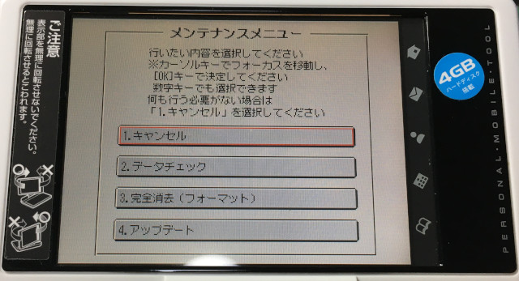
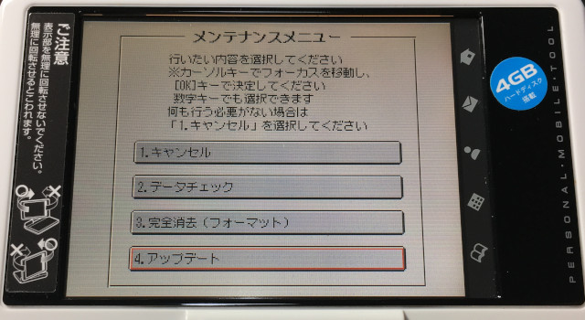
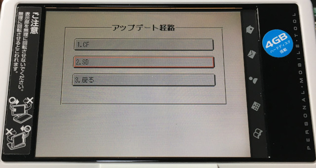
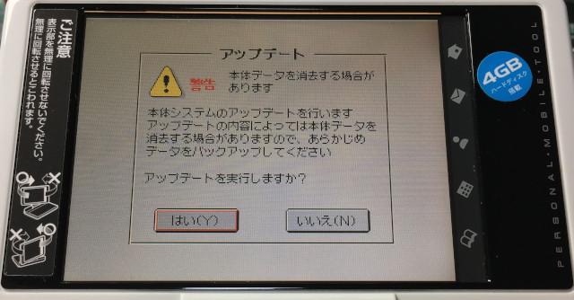
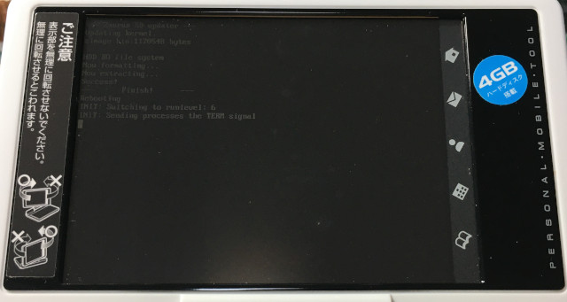
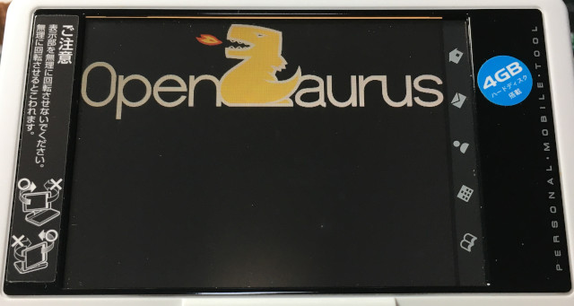
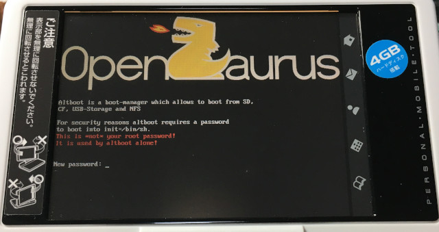
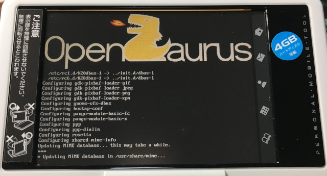
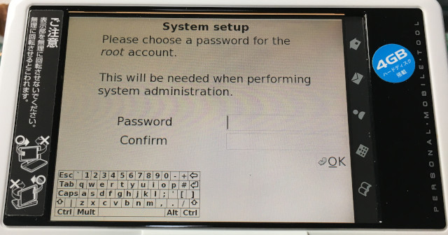
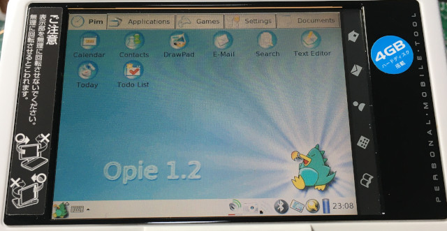

參考資訊：
https://zh-tw.osdn.net/projects/openzaurus-ja/releases/p4916
步驟如下：
1. 下載https://github.com/steward-fu/website/releases/download/zaurus/Opie-c3000.zip
2. 格式化SDCard(1GB)成FAT16檔案系統且不要有磁碟標籤
3. 將Opie-c3000.zip解壓縮至SDCard根目錄
4. 將SDCard插入機器
5. 按住OK並且開機









